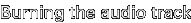

The Dreamcast firmware allows booting from a normal CD-R (CD-RW won't work
though), provided that it has the right structure. This page gives detailed
instructions on how to create a bootable CD-R using cdrecord (people running Wintendo can allegedly find binaries here).
The example commandlines assume a CD-R drive with SCSI id 6, you should of
course adjust them according to your configuration. They also tend to assume you are
running some kind of UNIX. Please don't mail me asking how to create empty files etc under DOS.
I don't know. Ask someone who uses DOS.
The Dreamcast firmware allows booting from a normal CD-R (CD-RW won't work
though), provided that it has the right structure. This page gives detailed
instructions on how to create a bootable CD-R using cdrecord (people running Wintendo can allegedly find binaries here).
The example commandlines assume a CD-R drive with SCSI id 6, you should of
course adjust them according to your configuration. They also tend to assume you are
running some kind of UNIX. Please don't mail me asking how to create empty files etc under DOS.
I don't know. Ask someone who uses DOS.
For a CD-R to be bootable on the Dreamcast, it should have two sessions. The first should contain only a normal audio track. It doesn't matter what kind of audio you actually put there, silence is fine. (It has been suggested that a data track could also be used for the first session. I haven't tried this myself though.) The second session should contain a CD/XA data track (mode 2 form 1). This data track should contain a regular ISO9660 file system, and in the first 16 sectors a correct bootstrap (IP.BIN). How to create a correct IP.BIN is described elsewhere.

First you have to burn the audio session. You can use any audio you like, but the simplest option is just to create 4 seconds (the minimum track length) of silence, like so:dd if=/dev/zero bs=2352 count=300 of=audio.rawNext, insert a blank CD and burn the audio track. Make sure to leave the disc open for further sessions, the -multi option to cdrecord takes care of that.
cdrecord dev=0,6,0 -multi -audio audio.raw
Now that the audio track has been burned, it is possible to create the ISO filesystem image. The reason that it can't be done earlier is that on a multisession disc the sector numbers in the image have to be offset with a number depending on the sessions burned before. To find out this number, run
cdrecord dev=0,6,0 -msinfowith the disc still in the drive. You should get two comma separated numbers (for example 0,11700). Remember these numbers. Now create the ISO image with mkisofs. If you want to create an image containing only the file 1ST_READ.BIN for example, then run
mkisofs -l -C x,y -o tmp.iso 1ST_READ.BINwhere x,y is the pair of numbers you got with -msinfo earlier. Make sure you get them correctly, or the image won't work.
The first 16 sectors of an ISO9660 filesystem are blank, to leave room for bootstraps. This is where IP.BIN (32768 bytes) goes. Replace the first 16 sectors of your image with the appropriate IP.BIN bootstrap:
( cat IP.BIN ; dd if=tmp.iso bs=2048 skip=16 ) > data.raw
cdrecord dev=0,6,0 -multi -xa1 data.rawWhen cdrecord completes, the disc is ready. Eject it and try it out in your Dreamcast.
Last modified: Sun Nov 21 12:16:07 CET 2004